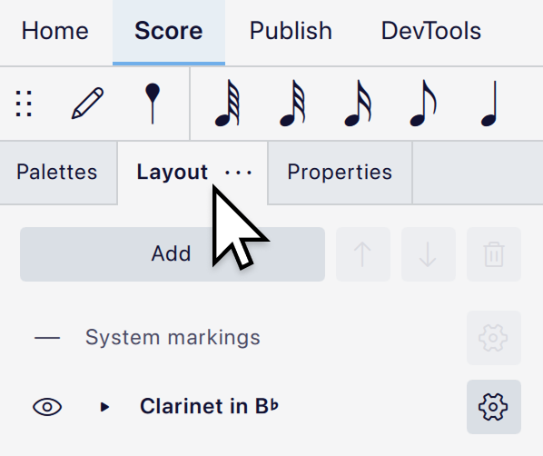

Instruments and system markings
Overview
The Layout panel (formerly called Instruments) gives you control over your instruments, the position of system markings, and some basic staff properties without having to leave the score view. All of the instruments in your score will appear in this panel.
Accessing the panel
Open the panel by clicking on the Layout tab:

If the tab is not visible, show it by selecting View -> Layout, or by pressing F7.
Managing instruments
Adding instruments
Open the Instruments dialog:
- Click the Add button at the top of the panel.
- Choose Add instrument from the popup.
You can also open this dialog by pressing I.
See Choose instruments for information on using the dialog.
Deleting instruments
Select an instrument and click the
Reordering instruments
Select an instrument and click the 

Renaming instruments
Click the 

To hide instrument labels entirely or control where the long and short names are used, use the settings in Format -> Style -> Score -> Instrument labels, rather than deleting the names here.
Replacing instruments
To replace an instrument in the Layout panel:
- Click the

- In the popup that appears, click Replace instrument.
- Select your desired replacement instrument in the dialog that appears.
- Click OK.
Managing staves
The Layout panel can also be used to add staves to an existing instrument and configure some of their basic properties.
Initially, the panel only shows an entry for each instrument. To show the individual staves of an instrument, expand the instrument by clicking the small black triangle to the left of the instrument name. Staves are usually labelled according their default clef (for example, a piano will have a 'Treble clef' and 'Bass clef')
Adding a staff to an existing instrument
- Expand the instrument by clicking the

- Click Add staff.

The new staff is part of the same instrument but its notation is completely independent of its other staves. To create a staff which stays in sync with the notation of an existing staff, add a linked staff instead.
Adding a linked staff to an existing instrument
Staves that are linked together will keep their notation synchronized, so any change on one staff will be reflected on the other(s). However, the staves can have different staff styles, which makes this useful for creating staff notation alongside tablature notation for guitar, banjo, ukulele, etc.
To create a linked staff:
- Expand the instrument by clicking the
- Click the
- Click Create a linked staff.
- Click the cog button on the newly-added staff to configure it, for example to change the Staff type, if required (see Configuring staves, below).
Deleting staves
- Expand the instrument by clicking the
- Select the staff you wish to delete.
- Click the

This will only work when an instrument has more than one staff. To delete the last staff, select and delete the instrument itself.
Reordering staves
To change the order of staves within an instrument, select a staff and click the
Configuring staves
You can configure some properties of individual staves by clicking the
- Staff type allows you to choose between a Standard staff and a variety of predefined tablature types.
- Small staff makes the staff small ('cue-size'). The size for small staves can be configured in Style -> Sizes.
- Hide any measures that do not contain notation (cutaway) will prevent the staff from being drawn for any measures which are empty. See Cutaway staves for more details.
For more information about staff customization, see Staff/part properties.
Managing system markings
System markings are items like tempo marks, rehearsal marks, voltas and jumps, which apply to all instruments in the score. By default they are shown at the top of the system, but in larger scores are often duplicated at least once further down. In orchestral scores, for example, it is common to duplicate them above the strings.
You can control where these markings appear via the Layout panel. Every score has one 'instance' of system markings at the top, which cannot be moved or deleted, but you can add extra instances and position them freely.
In a blank score, the instances are listed simply as 'System markings' in the panel, but as you add markings to the score they will update to list which types of markings are shown there. You can configure which types of item you want to show at each position.
If your score uses big time signatures (above or across the staves), these will also be treated as system markings, and will appear wherever you create a system markings instance. See Time signatures for information on how to choose these styles.
If you want to specify specific positions on the score where measure numbers will appear, these can also be treated as system markings. See Measure numbering position for more details.
Adding a instance of system markings
To add a new system marking instance:
- Open the Layout panel.
- Select the instrument above which you want the markings to appear.
- Click the Add button.
- Choose System markings from the popup.
If you do not select an instrument first, the new instance will appear at the first available space from the top of the score.
Deleting an instance of system markings
Select a system markings instance and click the
Moving an instance of system markings
Select a system markings instance and drag it up or down to a new position, or use the
If you move one instance on top of another, the one being moved will replace the other, since two cannot exist at the same position.
It is possible to show system markings below the bottom of the system by dragging an instance below the bottommost instrument. (This is not possible if the score only contains one instrument.)
Configuring which types of system markings to show
To choose which types of markings to show at a given position:
- Click the
- In the popup, click the

By default, all types are shown everywhere.
The available item types are: tempo, gradual tempo change, rehearsal mark, system text, system text line, volta, jump, play count text, measure number and time signature (if you are using large time signatures).
System markings and parts
System markings cannot be configured in parts. There is only a single instance, shown at the top, with all types of marking visible. You can still make individual markings invisible in parts in the usual way.
Hiding instruments and staves
To hide or unhide an instrument, click the 
To hide or unhide a specific staff:
- Expand the instrument by clicking the
- Click the
Hidden instruments and staves are not deleted, they are just hidden throughout the whole score and will not affect its layout. You can still create parts for hidden instruments.
A hidden instrument will not play back, but hidden staves will. If you wish to hide an instrument but still hear it, do one of the following:
- Unmute the instrument in the Mixer.
- Hide all of its staves individually, but don't hide the instrument itself.
Control whether instruments are automatically muted when hidden via Preference -> Audio & MIDI -> Toggle track mute by showing/hiding instruments in the Layout panel.
If you only wish to hide instruments or staves when there is no music for them on a given system, see Showing staves only where needed.